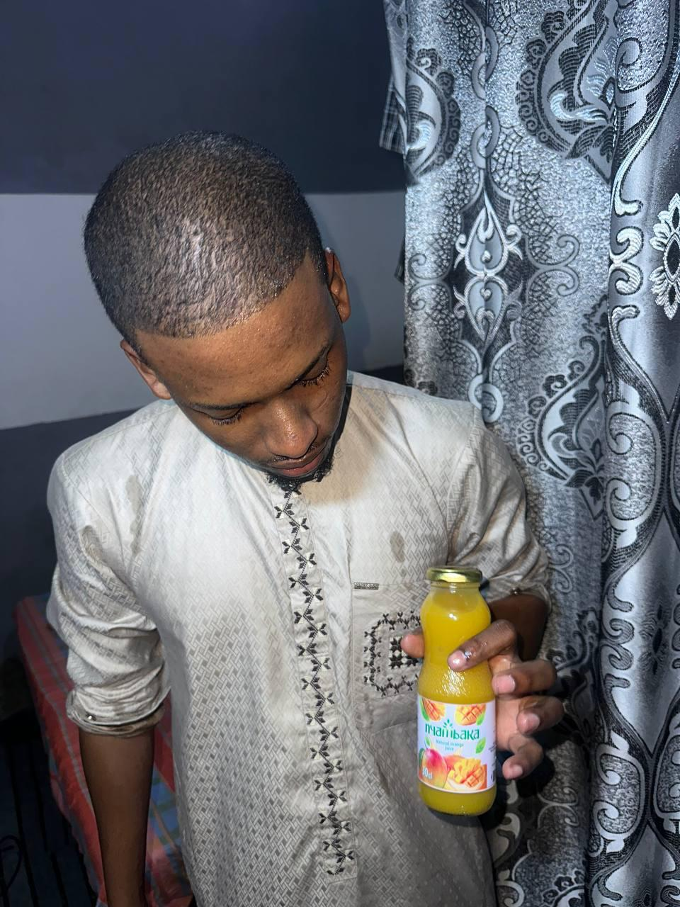
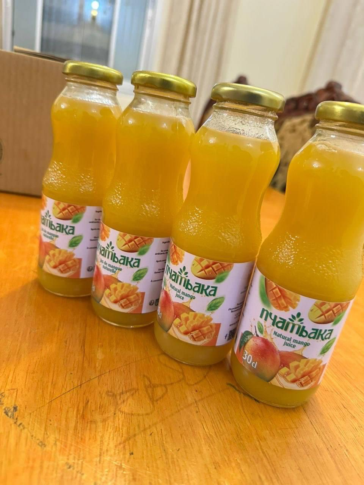
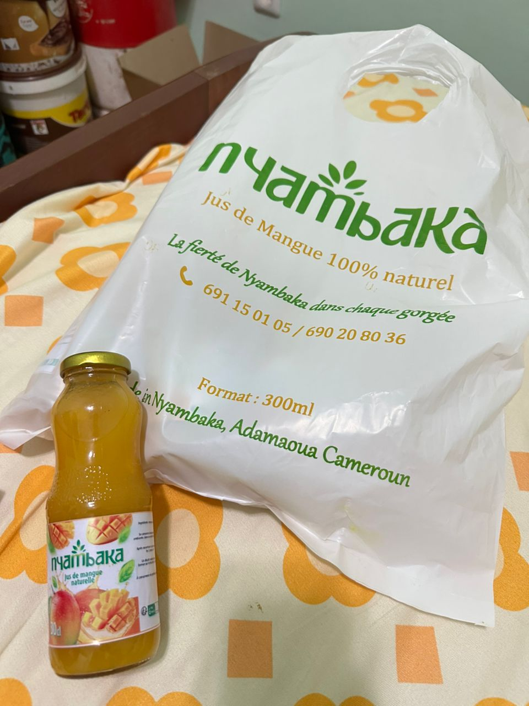
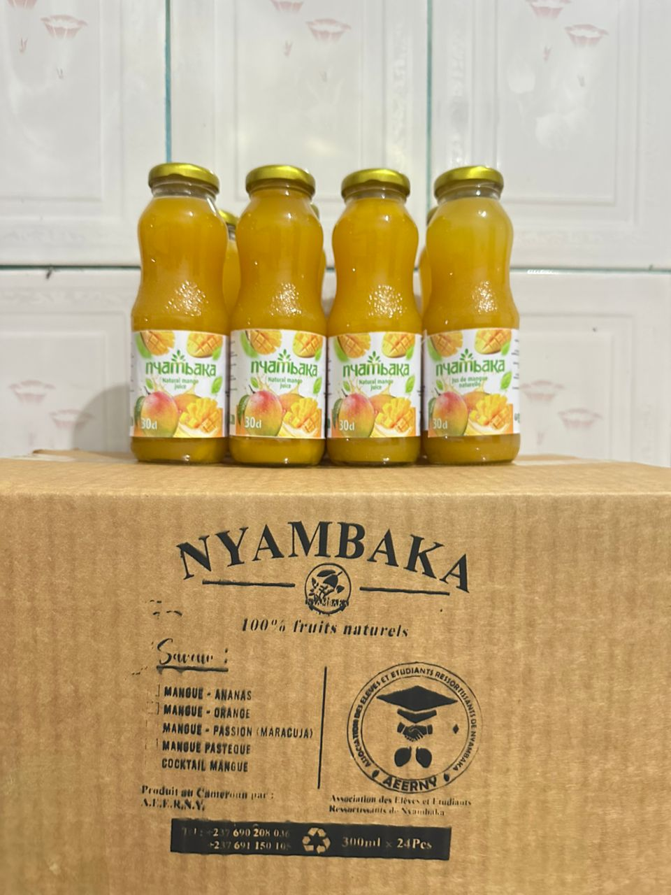
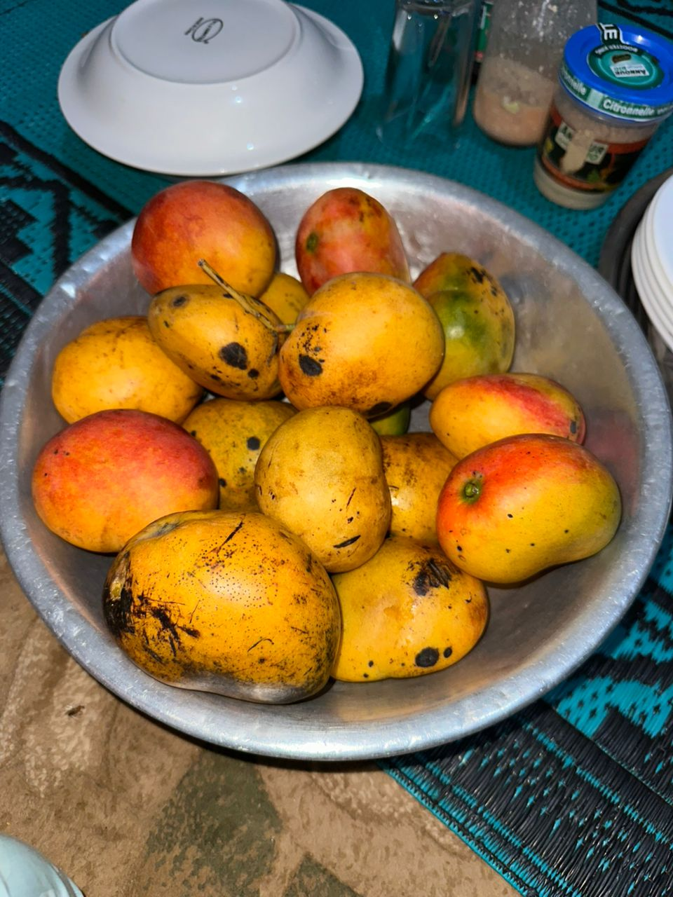
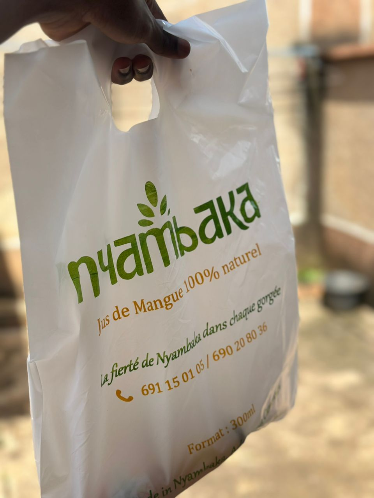
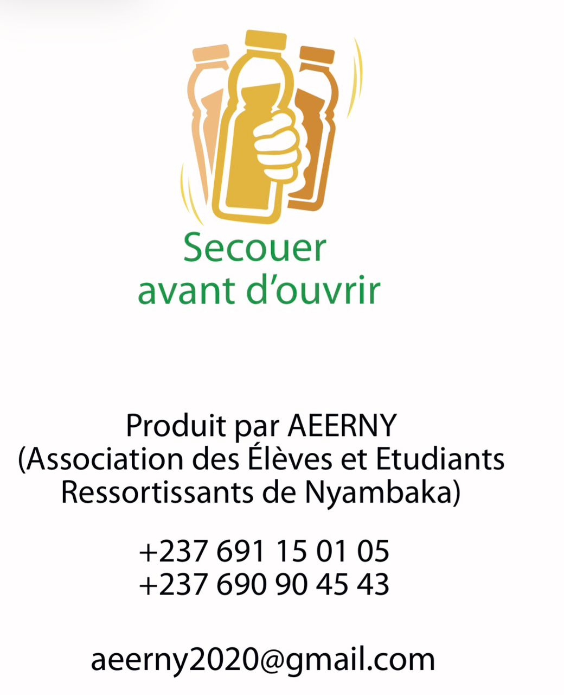

Enracinés à Nyambaka
De l'amour d'une communauté est née une bouteille. Découvrez pourquoi AEERNY est bien plus qu'un jus de mangue.

Un Jus Né d'une Conviction
AEERNY est née d'une conviction simple : le meilleur jus de mangue vient des meilleures mangues — et les meilleures mangues poussent ici, à Nyambaka.
Nous sommes l'Association des Élèves et Étudiants Ressortissants de Nyambaka, une initiative communautaire transformée en marque de jus. Chaque bouteille vendue soutient les agriculteurs locaux, les étudiants locaux, et les avenirs locaux.
Pas de raccourcis industriels. Pas d'additifs artificiels. Juste des mangues, du soin, et la fierté d'une communauté.
Ce Qui Nous Anime
Trois piliers fondateurs qui guident chaque décision chez AEERNY.
Encourager l’Entrepreneuriat Jeune
Nous accompagnons les jeunes de Nyambaka qui transforment la mangue en une véritable opportunité économique locale, porteuse d’innovation et d’avenir
Financer les Études
Une partie de nos revenus contribue aux bourses d'études pour les jeunes ressortissants de Nyambaka.
Préserver la Nature
Sans conservateurs, sans colorants. Nous défendons une production respectueuse de l'environnement à chaque étape.
Renforcer la Communauté
AEERNY rassemble. Chaque gorgée est un acte de solidarité envers ceux qui font vivre Nyambaka.
Les Grandes Étapes
La Fondation de l'AEERNY
L'association voit le jour, portée par la volonté de jeunes Nyambakans de redonner à leur terre d'origine.
Développement des Activités Communautaires
AEERNY multiplie les initiatives locales et rassemble progressivement une communauté engagée autour de la valorisation des richesses naturelles de Nyambaka et de l’entrepreneuriat jeune.
Lancement Commercial
AEERNY commence à distribuer dans les villes environnantes. Le bouche-à-oreille fait le reste.
Reconnaissance & Croissance
Premières couvertures médiatiques, premiers prix, et une communauté de clients fidèles qui ne cesse de grandir.
Vers une Mini-Usine de Production
AEERNY entre dans une nouvelle phase de développement avec la mise en place d’une mini-usine de production, la recherche de partenariats stratégiques et le renforcement des actions marketing afin d’accroître l’impact du projet et sa visibilité.
Vous Faites Partie de l'Histoire
Chaque commande que vous passez soutient une communauté, un agriculteur, un avenir.
Nous Rejoindre sur WhatsAppNyambaka à Travers l'Objectif





